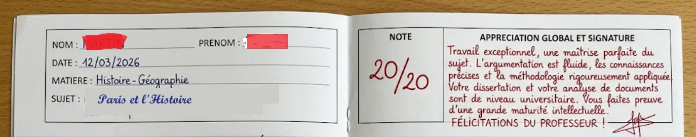

Av Gambetta :
Dédiée à Léon Gambetta (1838-1882), figure fondamentale de la IIIᵉ République.
Membre du gouvernement de la Défense nationale en 1870, il quitta Paris assiégé en ballon pour organiser la résistance en province,
puis devint l'un des grands bâtisseurs du régime républicain.
Fin
